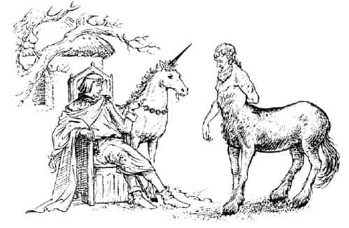
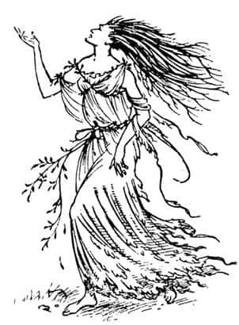
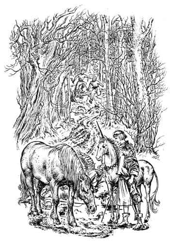

Kral’ın Aceleciliği
Yaklaşık üç hafta sonra Narnia krallarının sonuncusu, tatlı bahar günlerinde kaldığı küçük av kulübesinin kapısının yanı başındaki görkemli meşe ağacının altında oturuyordu. Av kulübesi, çatısı sazlarla kaplı alçak bir binaydı; Lamba Çorakları’nın doğu ucundan pek uzak sayılmazdı, iki nehrin birleştiği yerin biraz yukarısındaydı. Orada, hanedan şehri Cair Paravel’in debdebesinden ve törenlerinden uzakta, sade ve rahat bir yaşamı tercih ederdi. İsmi Kral Tirian’dı, yirmi-yirmi beş yaşlarındaydı; omuzları geniş ve güçlüydü. Kolları ve bacakları kaslı; sakallarıysa seyrekti. Gözleri maviydi, korkusuz ve dürüst bir yüzü vardı.
O bahar sabahı, en sevgili dostu, tekboynuzlu bir at olan Cevher hariç, yanında kimse yoktu. Birbirlerini kardeş gibi severlerdi, savaşta birbirlerinin hayatını kurtarmışlardı. Soylu hayvan, Kral’ın koltuğunun oldukça yakınında durmuş, mavi boynuzunu beyaz gövdesine sürterek parlatıyordu.
“Bugün kendimi ne spora ne de işe verebileceğim Cevher” dedi Kral. “Bu harika haberden başka hiçbir şey düşünemiyorum. Sence bugün daha fazlasını öğrenebilir miyiz?”
“Böyle haberleri dedelerimiz, babalarımız bile duymamıştır; bizim de duyabileceğimiz en muhteşem haber olacak, efendim” dedi Cevher, “tabii eğer doğruysa.”
“Doğru olmaması için bir sebep var mı ki?” dedi Kral. “İlk kuşların buraya gelip, ‘Aslan burada, Aslan yine Narnia’da’ demesinin üzerinden bir haftadan fazla zaman geçti. Sonra sincaplar geldi. Onu görmemişler, ama ormanda olduğuna inandıklarını söylediler. Sonra da geyik geldi. Onu ayışığında, Lamba Çorakları’ndan uzaklarda, kendi gözleriyle gördüğünü söyledi. Sonra o sakallı esmer adam, Calormenli tüccar geldi. Calormenliler Aslan’a bizim kadar değer vermezler, ama adam hayal görmediğinden emindi. Dün geceki porsuğu da unutmayalım; o da görmüş Aslan’ı.”
“Gerçekten, efendim” dedi Cevher, “hepsine inanıyorum. İnanmıyor gibi görünüyorsam, bu sadece inanamayacak kadar çok sevindiğimdendir. Bu inanılmayacak kadar güzel bir haber.”
“Evet” dedi Kral. Sevinçten titreyerek derin bir iç çekti. “Hayatım boyunca hep bunu bekledim.”
“Dinle!” dedi Cevher, başını yana çevirip kulaklarını ileriye doğru dikerek.
“Ne var?” diye sordu Kral.
“Toynaklar, efendim” dedi Cevher. “Dörtnala giden bir at. Çok büyük bir at. Şu insan başlı atlardan, Sentor’lardan biri olmalı. İşte orada.”
Görkemli, altın sakallı bir Sentor, alnında insan, kestane rengi gövdesinde at teriyle hızla Kral’a yaklaştı, durdu ve yere kadar eğildi. “Kral’a selamlar” diye bağırdı, bir boğa kadar tok bir sesle.

“Selam sana!” dedi Kral, omzunun üzerinden av kulübesinin kapısına doğru bakarak. “Soylu Sentor’a bir tas şarap. Hoş geldin Bilge. Soluklan da ziyaretinin sebebini söyle.”
Elinde tuhaf biçimde oyulmuş kocaman tahta bir tas taşıyan bir uşak kulübeden çıktı ve tası Sentor’a verdi. Sentor tası kaldırarak, “Öncelikle Aslan’ın ve gerçeğin, sonra da Ekselanslarının şerefine içiyorum, efendim” dedi.
Güçlü kuvvetli altı adamın ancak içebileceği şarabı bir yudumda içip bitirdi ve tası uşağa verdi.
“Evet Bilge” dedi Kral. “Bize Aslan’dan haber mi getirdin?”
Bilge kaşlarını çatmış, ciddi bir ifadeyle bakıyordu.
“Efendim” dedi, “ne kadar uzun zamandır yaşadığımı ve yıldızları incelediğimi bilirsiniz; çünkü biz Sentorlar siz insanlardan da, arkadaşınız tekboynuzdan da çok çok daha uzun yaşarız. Tüm yaşamım boyunca, gökyüzüne böylesine kötü şeyler yazıldığını hiç görmemiştim. Yıldızlar ne Aslan’ın gelişi ne barış ne de sevinç hakkında bir şey söylüyor. Beş yüz yıldır gezegenlerin böylesi bir felaket haberi vermediğini biliyorum. Narnia üzerinde büyük bir tehlikenin dolaştığı konusunda siz Ekselanslarını uyarmak epeydir aklımdaydı. Dün gece Aslan’ın Narnia’da olduğu söylentileri ayyuka çıktı. Efendim, bu hikâyeye inanmayın. Bu olamaz. İnsanlar ve hayvanlar yalan söyler ama yıldızlar asla söylemez. Aslan gerçekten Narnia’ya gelecek olsaydı gökyüzü bunu önceden bildirirdi. Gerçekten gelecek olsaydı en güzel yıldızlar onun şerefine toplanırdı. Hepsi yalan.”
“Yalan mı?” dedi Kral sertçe. “Narnia’daki ya da dünyanın herhangi bir yerindeki hangi yaratık böyle bir konuda yalan söylemeye cesaret edebilir?” Farkında olmadan eli kılıcının kabzasına gitti.
“Bunu bilemem Kralım” dedi Sentor. “Dünyada yalancıların olduğunu biliyorum, ama yıldızlar asla yalan söylemez.”
“Tüm yıldızlar aksini söylese de” dedi Cevher, “Aslan’ın gelip gelmeyeceğini merak ediyorum. O yıldızların kölesi değil, yaratıcısıdır. Eski hikâyelerde onun uysal bir aslan olmadığı söylenmez mi?”
“İyi dedin, iyi dedin Cevher” diye bağırdı Kral. “O kelimeler çok önemli: O uysal bir aslan değil. Birçok hikâyede anlatılır.”
Bilge elini kaldırıp Kral’a çok ciddi bir şey söylemek üzere öne doğru eğilmişti ki, bir inleme duyuldu. Üçü de hızla yaklaşan bu sesi daha iyi duyabilmek için başını çevirdi. Batı taraflarında ağaçlar o kadar sıktı ki, kimin geldiğini göremiyorlardı. Çok geçmeden konuşmalar duyulmaya başladı.
“Of, of, of!” diyordu Ses. “Vay kardeşlerimin başlarına gelenler! Vay kutsal ağaçların başına gelenler! Ormanları harap ediyorlar. Baltaları üzerimize savuruyorlar. Bizi kesiyorlar. Muhteşem ağaçları kesiyorlar, kesiyorlar, kesiyorlar.”
Son “kesiyorlar”ı söylerken konuşanın kim olduğu anlaşılmıştı. Bir kadına benziyordu, ama öyle uzun boyluydu ki, başı Sentorunkiyle aynı hizadaydı; kadına benzediği gibi ağaca da benziyordu. Hiç orman perisi görmediyseniz tarif etmek çok zordur, gördüyseniz onu başka bir şeyle karıştırmanıza imkân yoktur, çünkü renginde, sesinde ve saçlarında bir farklılık vardır. Kral Tirian ve iki hayvan onun bir kayın ağacı perisi olduğunu hemen anlamıştı.

“Adalet, Kralım!” diye bağırdı. “Yardım et. Halkını koru. Lamba Çorakları’nda kesiyorlar bizi. Kardeşlerimden kırkının büyük gövdesi şimdiden devrildi.”
“Ne diyorsun Bayan! Lamba Çorakları’nı mı kesiyorlar? Konuşan ağaçları mı öldürüyorlar?” diye bağırdı Kral, ayağa fırlayıp kılıcını çekerek. “Buna nasıl cüret ediyorlar? Kim kalkışabilir böyle bir şeye? Aslan’ın yelesi adına—”
“A-a-a-h” diye içini çekti orman perisi, sanki ağrı içindeymiş, sürekli darbe alıyormuş gibi titreyerek. Sonra iki ayağı da yerden kesilmiş gibi aniden yana doğru düştü. Onu bir an için çimlerde yatarken gördüler, sonra ortadan kayboldu. Ne olduğunu biliyorlardı. Perinin millerce uzaktaki ağacı kesilmişti.
Kral o kadar üzgün ve kızgındı ki, bir süre konuşamadı. Sonra, “Gelin dostlarım. Son süratle nehrin yukarısına gidip bunu yapan hainleri bulmalıyız. Bir tekini bile canlı bırakmayacağım” dedi.
“Tanrı’nın izniyle, efendim” dedi Cevher.
Bilge, “Haklı öfkenize rağmen dikkatli olun, efendim. Topraklarımızda garip şeyler olmakta. Vadinin yukarısında silahlı isyancılar varsa, üçümüz onların üstesinden gelemeyiz. Eğer bir süre beklemeyi tercih ederseniz—”
“Bir an bile beklemeyeceğim” dedi Kral. “Cevher ve ben ilerlerken, sen de olabildiğince hızla Cair Paravel’e koş. İşaret olarak yüzüğümü al. Bana, hepsi de iyi silahlanmış çok sayıda adam, çok sayıda konuşan köpek, on cüce (hepsi öldürücü okçular olsun), bir ya da iki leopar ve Dev Taşayak’ı getir. Tüm bunları mümkün olduğunca çabuk yap.”
“Tanrı’nın izniyle, efendim” dedi Bilge. Hemen vadiden aşağıya, doğuya doğru dörtnala koşmaya başladı.
Kral, bazen kendi kendine mırıldanarak, bazen de yumruklarını sıkarak büyük bir hızla yürümeye koyuldu. Cevher hiçbir şey söylemeden onu izliyordu; Tekboynuz’un boynundaki altın zincirin belli belirsiz şıngırtısı ile iki ayak ve dört toynağın gürültüsünden başka bir ses duyulmuyordu. Çok geçmeden nehre ulaştılar ve otluk bir yoldan, nehrin yukarısına doğru yürümeye başladılar: Nehir sollarında, orman sağlarındaydı. Az sonra sık ağaçların suyun kenarına kadar geldiği bir yere vardılar; yol burada çok bozuktu. Yol, tabii buna yol denebilirse, artık nehrin güney kıyısındaydı, oraya ulaşabilmek için nehri geçmek zorunda kaldılar. Su, Tirian’ın koltukaltlarına kadar geliyordu, dört ayağı olduğundan dengesini daha rahat sağlayan Cevher, akıntıyı kesmek için onun sağında yürüyordu. Tirian güçlü kolunu atın güçlü boynuna doladığından ikisi de sağ salim karşıya geçti. Kıyıya çıkar çıkmaz Tirian, kılıcını kuru kalmış tek yeri olan omzunda dikkatle kuruladı.
Nehir sağlarında, Lamba Çorakları önlerinde, batıya doğru gidiyorlardı. Yaklaşık bir mil gitmişlerdi ki, ikisi de durup aynı anda konuştu. Kral, “Oradaki ne?”, Cevher ise “Bak” demişti.
“Bir sal” dedi Tirian.
Öyleydi. Yeni kesilmiş ve dalları budanmış yarım düzine ağacın mükemmel gövdelerinin oluşturduğu bir sal hızla nehirden aşağı gidiyordu. Salın önünde elindeki sırığı dümen olarak kullanan bir susıçanı vardı.
“Hey! Susıçanı! Ne yapıyorsun?” diye bağırdı Kral.
“Kütükleri Calormenliler’e satmak için aşağıya götürüyorum, efendim” dedi sıçan, kafasında şapka varmış da şapkasına dokunuyormuş gibi kulağına dokunarak.
“Calormenliler mi?” diye kükredi Tirian. “Ne demek istiyorsun? Bu ağaçların kesilmesi emrini kim verdi?”
Yılın bu zamanında nehir çok hızlı akar; sal çoktan Kral ve Cevher’in yanından geçip gitmişti. Susıçanı omuzlarının üzerinden geriye baktı ve bağırdı:
“Aslan’ın emirleri, efendim. Aslan’ın.” Bir şeyler daha söylemişti, ama duyamadılar.
Kral ve Tekboynuz birbirlerine baktılar; ikisi de herhangi bir savaşta olduğundan daha fazla korkmuş görünüyorlardı.
“Aslan” dedi Kral, sonunda çok alçak bir sesle. “Aslan. Bu doğru olabilir mi? Kutsal ağaçları kesip orman perilerini öldürüyor olabilir mi?”
“Orman perileri korkunç bir hata yapmış olmadıkça…” diye mırıldandı Cevher.
“Peki ya onların Calormenliler’e satılması!” dedi Kral. “Bu mümkün mü?”
“Bilmiyorum” dedi Cevher, mutsuz bir ifadeyle. “O uysal bir aslan değil ki.”
“Pekâlâ” dedi Kral sonunda, “devam etmeliyiz ve önümüze çıkacak engellere göğüs germeliyiz.”
“Yapabileceğimiz tek şey bu, efendim” dedi Cevher. O anda, yola yalnız devam etmenin ne kadar aptalca olduğunu ne o, ne de Kral görebilmişti. Sağlıklı düşünemeyecek kadar kızgındılar. Ne var ki, sonunda acelecilikleri yüzünden başlarına bir sürü bela gelecekti.
Kral arkadaşının boynuna sıkıca sarılıp başını eğdi.
“Cevher” dedi, “bu başımıza gelen nedir? Aklımdan korkunç düşünceler geçiyor. Bu günleri görmeden ölseydik daha mutlu olurduk.”
“Evet” dedi Cevher. “Çok uzun yaşadık. Dünyadaki en kötü şey başımıza geldi.” Bir-iki dakika öylece durdular, sonra yola çıktılar. Önleri yokuş olduğu için henüz bir şey göremiyorlardı, ama çok geçmeden baltaların tak tak tak diye ağaçlara vuruşunu duymaya başladılar. Yükseltinin tepesine ulaştıklarında Lamba Çorakları’nı görebildiler. Manzara karşısında Kral’ın yüzü bembeyaz oldu.
O yaşlı ormanın, altın ve gümüş ağaçlarının büyüdüğü ve bir zamanlar bizim dünyamızdan bir çocuğun koruyucu ağacı diktiği ormanın tam ortasında geniş bir yol açılmıştı. Yol adeta açık bir yara gibiydi; kesilmiş ağaçların aşağıya, nehre sürüklenirken bıraktığı derin çamurlu izlerle doluydu. İnsanlar harıl harıl çalışıyordu, kırbaç şaklamaları ve atların kütükleri çekerek zorlukla ilerlerken çıkardıkları sesler duyuluyordu. Kral’la Cevher’in gözüne çarpan ilk şey, çalışan insanların yabancı olmasıydı. Bu insanlar Narnia’nın sarı saçlı insanları değildi; Archenland’ın ötesinde, güneydeki çölün ötesindeki büyük ve zalim bir ülke olan Calormen’den gelen esmer, sakallı adamlardı bunlar. Kuşkusuz insanın Narnia’da bir ya da iki Calormenli - tüccar ya da elçi - görmesi alışılmadık bir şey değildi, çünkü o günlerde Narnia ve Calormen barış içindeydi. Ama Tirian neden bu kadar kalabalık olduklarını ve neden bir Narnia ormanını kestiklerini anlayamıyordu. Kılıcını sımsıkı kavradı ve pelerinini sol kolunun arkasına itti. Hızla adamların arasına indiler.
İki Calormenli, koca bir kütüğü çeken bir atı sürmekteydi. Kral tam yanlarına vardığında kütük çamura saplandı.
“Yürü, miskinin yavrusu! Seni tembel domuz, çek!” diye bağırdı Calormenliler kırbaçlarını şaklatarak. At elinden geleni yapıyordu; gözleri kızarmıştı ve ağzı köpüklerle kaplıydı.

“Çalış, tembel hayvan” diye bağırdı Calormenliler’den biri; bağırırken de kırbacını hayvana vahşice vurmuştu. İşte o anda gerçekten korkunç bir şey oldu.
O ana kadar Tirian, Calormenliler’in kendi atlarını kullandıklarını ve onların bizim dünyamızdaki gibi dilsiz ve akılsız hayvanlar olduklarını düşünmüştü. Dilsiz atların bile aşırı çalıştırılmasından nefret etmesine rağmen, aklı ağaçların katliyle meşguldü. Kimsenin Narnia’nın konuşan atlarından birini kırbaçlamayı bir yana bırakın, koşuma vurabileceği bile aklının ucundan geçmezdi. O vahşi darbe indiğinde at şaha kalktı ve yarı bağırarak:
“Zorba aptal! Elimden geleni yaptığımı görmüyor musun?” dedi.
Tirian ve Cevher, atın Narnialı olduğunu anlayınca o kadar üzüldüler ki, ne yapacaklarını şaşırdılar. Kral kılıcını kaldırdı, Tekboynuz toslayacakmış gibi başını eğdi. Beraberce ileriye atıldılar. Az sonra iki Calormenli cansız yatıyordu; birinin kafası Tirian’ın kılıcıyla kesilmiş, diğerinin kalbi Cevher’in boynuzuyla delinmişti.